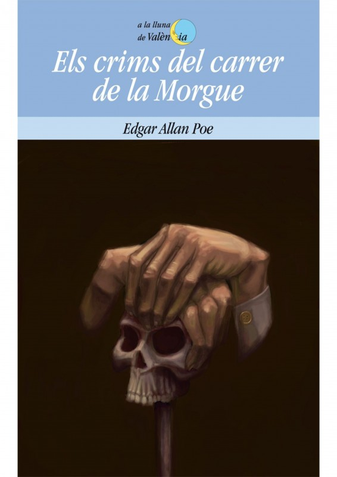
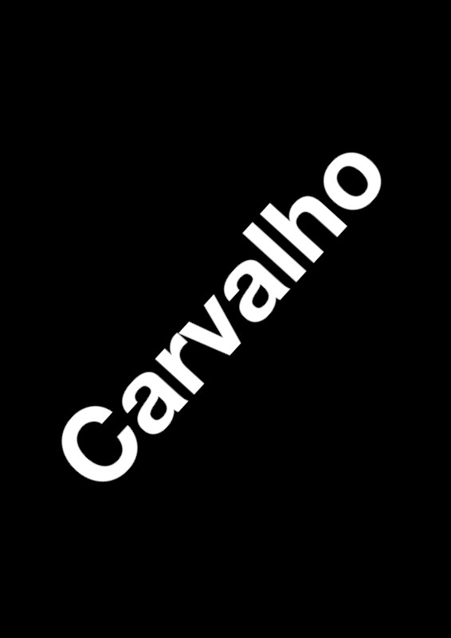

Vivim en l’era del contingut: tot és carn de canó per a les xarxes socials. Però una novel·la no és contingut; no és una cosa que simplement ocupa un espai en la teva vida o t’ajuda a passar el temps. Una novel·la és un fi en si mateix, i s’ha d’apreciar com a tal. Otessa Moshfegh
Per parlar de les narracions a partir dels seus inicis, has hagut d’observar una sèrie d’elements clau: el temps de la història, la veu narradora, els personatges i l’aparició de les seves veus en el relat, el que mostren o diuen del món narrat; les paraules que es fan servir, el ritme del relat, etc. Fets i indicis que t’acosten al sentit de les obres.
Ara, continua millorant la teva destresa com a lector literari. Para atenció.
Una lent d’augment
Els elements narratius són substancials als relats literaris. Identificar-los i entendre com funcionen guia la comprensió i la interpretació de les obres. Potser no són tan evidents com el tema o l'argument de les narracions, però també formen part del seu ADN i, per tant, són bàsics i reveladors a l’hora de descobrir-ne el sentit o de, simplement, gaudir de llegir literatura.
Si hi penses una mica, t’adonaràs que els grans temes literaris han estat sempre els mateixos: l’amor, el viatge, la mort; l’amistat, la violència i el crim...
Cada autor combina aquest conjunt de temes i d’elements narratius de manera diferent per compondre una nova peça literària que és única i que podem posar en relació, precisament a partir d’aquests elements bàsics, amb la resta d’obres de la literatura universal.
Quan aquesta combinació de temes i d’elements està clarament fixada com un tipus concret de narració, que, a més, és socialment reconegut com a tal, podem parlar de gènere narratiu.
Així, els lectors podem avançar -fins i tot donant un cop d’ull a la coberta- si el que tenim a les mans és una novel·la romàntica, d’aventures o de ciència-ficció; un llibre de terror, un relat policíac o un true crime.
Si posem per cas un tema tan humà com la violència i el crim, comprovem que és present a gairebé tots els relats coneguts des de l’inici de la història de la literatura. Cada relat és diferent pel que fa a l’argument, el món que narra, la veu que explica la història, l’ordre en què s’hi expliquen els fets, etc., però també podem detectar patrons comuns en algunes obres. Fixa’t en aquesta llista, de segur que reconeixes el gènere narratiu al qual pertanyen:
Hi ha un crim.
El crim és previ a l’inici de la narració i sovint apareix a l’inici del relat.
Paral·lelament a la història del crim, hi ha la història de la investigació, i totes dues històries s’entrellacen en el relat.
Els personatges pertanyen a mons socials i col·lectius professionals ben definits.
El personatge protagonista ha de resoldre el misteri al voltant de la història del crim i reconstruir-la, alhora que la seva pròpia història avança amb la de la investigació.
La manera com es mostra la història i s’ordenen els fets en el relat són essencials per crear suspens i girs argumentals.
L’acció i el ritme també són clau a la narració.
Hi ha elements i llocs comuns habituals: armes, procediments i instruments propis de la investigació forense i criminal, secrets; ambients foscos, perill.
Els patrons dins d’un mateix gènere varien al llarg del temps, com també canvien els referents ètics i marcs ideològics que contenen les obres.
Igualment, un gènere es pot hibridar amb altres patrons genèrics i donar lloc a fórmules o jocs narratius nous, com ara una distopia policíaca o un western romàntic.
De la mateixa manera, la consideració d’un determinat gènere per part de la societat evoluciona.
Mira’t aquesta taula i considera alguns dels canvis del gènere negre des dels orígens a l’actualitat:
En el seu origen...

La novel·la policíaca es limita a la resolució d’un enigma criminal, sense que importi gaire la complexitat del món en què s'insereixen el misteri i els seus protagonistes.
En l’actualitat...

Hi trobem molt més que la resolució intel·lectual d’un crim sofisticat imaginat per l’autor. Pot haver-hi molta complexitat en el món que ha creat: realisme social, observació del comportament humà, anàlisi d’estructures de poder i relacions interpersonals amb molts matisos, etc.
Per exemple: L’univers del detectiu Carvalho de Manuel Vázquez Montalbán
El crim atroç s'identifica amb l’assassinat
El catàleg atroç dels crims s’eixampla i hi apareixen els crims econòmics, mediambientals i polítics a gran escala.
Sovint estereotipada en la trama, la dona ocupa de manera general i tòpica el paper d’objecte de desig o de víctima que necessita salvació, una femme fatale o una persona caràcter manipulador.
I només el de lectora en el circuit cultural -fet que, de segur, no discutirien ni Agatha Christie ni la seva investigadora Miss Marple!
El crim atroç s'identifica amb l’assassinat
Els personatges femenins han anat multiplicant-se i variant.
D’una banda, són moltes les detectivesses i investigadores en el gènere negre, entre les quals hi ha nous paradigmes com el que representa Lisbeth Salander, de la trilogia Millennium.
O el de Marina Huguet, a la sèrie Treufoc, malgrat que no tothom acceptaria de catalogar-la com a investigadora...
D’altra banda, el gènere ha transgredit la figura de les víctimes en tant que propiciadores del crim. La víctima i la seva història són ateses amb respecte, versemblança social i riquesa narrativa.
Finalment, són moltes les autores i editores de novel·la negra en l’actualitat.
El catàleg atroç dels crims s’eixampla i hi apareixen els crims econòmics, mediambientals i polítics a gran escala.
La novel·la policíaca és menystinguda i s’associa a produccions decadents, no literàries, relegades a col·leccions editorials de poc valor, destinades a lectors que volen evadir-se a través d’una fórmula narrativa repetida amb arguments rebregats, personatges arquetípics sense cap complexitat.
La consideració del gènere muda a partir de l’evolució de la seva qualitat literària i de la seva funció social.
Es considera ara que la novel·la negra permet fer entendre la realitat, des de la ficció, a partir de creacions literàries genuïnes i originals.
Al voltant de les obres del gènere negre hi ha expectació i esdeveniments culturals de molta rellevància. El festival literari BCN Negra n’és un clar exemple.
Així mateix, el gènere també ha captat l’atenció de la crítica literària i dels estudiosos de la literatura.
Les sèries, és a dir, les novel·les protagonitzades per un mateix investigador satisfà les expectatives del lector perquè hi troba sempre un mateix personatge central, infal·lible, carismàtic i admirat pel seu enginy i dots deductius. Es tracta generalment un aficionat que treballa pel gust de fer-ho, com ara Auguste Dupin d’Edgar Allan Poe que segurament va inspirar Arthur Conan Doyle per crear Sherlock Holmes o la figura d’Hercule Poirot de l’escriptora Agatha Christie.
La figura del detectiu serialitzat evoluciona cap a un personatge, tant femení com masculí, que a primera vista no té res d’extraordinari, sovint se sent incòmode amb si mateix i acara críticament temes com el racisme, el fanatisme, el tràfic de drogues, l’explotació sexual o el tràfic de persones. L’entorn geogràfic i paisatgístic esdevé gairebé un personatge i l’autor treballa més a fons la construcció i desconstrucció dels personatges i els investigadors.
rs
No has d’oblidar, però, que en la major part d’obres literàries pot haver-hi patrons temàtics i narratius de gènere, sense que es tracti en cap cas d’una obra adscrita a cap gènere narratiu.
Mira els vídeos i llegeix els textos d’aquest mosaic:
La fossa, sèrie dirigida per Agustí Vila, 2020. CCMC i CVMC
El niño que no sabía jugar
Había un niño que no sabía jugar. La madre le miraba desde la ventana ir y venir por los caminitos de tierra, con las manitas quietas, como caídas a los lados del cuerpo. Al niño, los juguetes de colores chillones, la pelota, tan redonda, y los camiones, con sus ruedecillas, no le gustaban. Los miraba, los tocaba, y luego se iba al jardín, a la tierra sin techo, con sus manitas, pálidas y no muy limpias, pendientes junto al cuerpo como dos extrañas campanillas mudas. La madre miraba inquieta al niño, que iba y venía con una sombra entre los ojos. “Si al niño le gustara jugar yo no tendría frío mirándole ir y venir”. Pero el padre decía, con alegría: “No sabe jugar, no es un niño corriente. Es un niño que piensa”.
Un día la madre se abrigó y siguió al niño, bajo la lluvia, escondiéndose entre los árboles. Cuando el niño llegó al borde del estanque, se agachó, buscó grillitos, gusanos, crías de rana y lombrices. Iba metiéndolos en una caja. Luego, se sentó en el suelo, y uno a uno los sacaba. Con sus uñitas sucias, casi negras, hacía un leve ruidito, ¡crac!, y les segaba la cabeza.
FIN
Los niños tontos, Ana María Matute. Ediciones Arión, 1956.
El policía de las ratas, Roberto Bolaño. Adaptació teatral de La Abadia. Adaptació cinematogràfica Alfa Pictures, 2022.Pots llegir el relat complet aquí: El policia de las ratas, Roberto Bolaño
Morir no és tan senzill com sembla. I encara menys per a un espècimen com aquest que ara jeu de bocaterrosa amb els membres grotescament desllorigats sobre els rajols humits de la cuina.
—S'hi ha estat una bona estona.
Les paraules del sotsinspector no troben eco i queden enganxades com una tallarina a la paret. El seu ajudant, un passerell vestit de telesèrie, sent el fàstic fet puny aferrat a la gola, s'agafa la panxa amb les mans, tomba la cara i surt corrent a vomitar.
Tota la veritat, Núria Cadenes. La Magrana, 2022.
A ningú.
El xiscle
El xiscle ha ressonat estrident, just al moment que s'han apagat els llums. Un xiscle de mort, exhalat per un coll ple de vida. Un xiscle que ha ferit el tímpan i sacsejat brutalment els vidres dels finestrals.
Xiscle expel·lit en un instant d'horror que ha ressonat i retrunyit per tota la casa.
Després, res. Tots els convidats, corglaçats, tenen prou feina a escoltar-se el retruc del cor que els vol fugir executant uns bots fantàstics.
En aquest moment —que nosaltres qualifiquem de solemne perquè comencem la narració d'uns fets—, del rellotge de bronze i cristall cauen dotze batallades.
Mitja nit.
L'hora fúnebre.
Tètrica.
Quan els grans espais siderals exhalen misteri i l'òrbita terrestre giravolta més vertiginosament.
Temps enllà, hom s'assabentà que, el volcà de Karsumkala, aquell dia, en aquella hora, havia llançat a l'infinit il·limitat, l'orgull del seu foc i el seu fum: torrents de lava bullidora havien soterrat cl poblat dels lectors dels Vedes i havia aparegut, nascut d'un lotus groc l'antihome.
Dominant el silenci sepulcral de l'estança, una veu, que vol ésser serena, pregunta:
—Algú té un llumí?
Un silenci absolut acull la pregunta.
—Qui té un llumí?
Enmig dels respirs angoixosos hom copsa fregadís de mans dins les butxaques i una veu que la quietud fa destacadissa exclama amb aire de triomf:
—Jo en tinc: però no és llumí: és encenedor.
Un llampec —la nit, com escau, és de tempesta desfermada— aclareix prou la cambra perquè el posseïdor de la veu serena pugui abastar, junt amb l'encenedor, una colla de capses de llumins per encetar que, a les palpentes, li són ofrenades mentre el tro esclata profund i ofega una remor propera.
La veu que sembla serena crida:
—Xun-Li! Res.
Altre cop.
—Xun-Li!!
Silenci.
Tot d’una avança la remor d’un trepig de peus llisquívols.
Tros, Rafael Vallbabona. Pagès Editors, 2017. Adaptació cinematogràfica Alfa Pictures, 2022.Pots llegir, si vols, les primeres pàgines de la novel·la aquí: Tros, Rafael Vallbona
Atura’t i reflexiona
La violència i el crim formen part de totes les peces del mosaic anterior, però, alto!, s’hi manifesten de manera diferent i cada autor ha elaborat la pròpia obra de manera personal.
Què mostren aquestes peces? Hi veus elements temàtics i narratius comuns? Quins? En què divergeixen? Quines catalogaries, doncs, com a produccions de gènere negre? Per què? Quines en deixaries fora? I per què?
Torna-hi i observa com ho fan. La llista de les característiques i la taula de l’evolució del gènere negre et serviran de guia d’observació i anàlisi de cada peça.
Segurament l’aportació d’algun company et farà descobrir algun detall que t’havia passat per alt i enriqueix la teva visió. Comenta’l perquè entre tots recopileu el màxim nombre d’indicis que permetin arribar a una o altra conclusió.
Ús i abús del pacte ficcional
Ara que has exercitat una mica la mirada amb relació als patrons genèrics que podem trobar en moltes obres narratives, convé que t’aturis també en una altra qüestió clau en la recepció d’aquestes obres, especialment en la lectura literària: el pacte ficcional.
Fixa’t en aquestes dues citacions de dos grans lectors -i magnífics autors:
La literatura es invención. La ficción es ficción. Calificar un relato de historia verídica es un insulto al arte y a la verdad. Todo gran escritor es un gran embaucador, como lo es la architramposa Naturaleza.
Vladimir Nabokov, Curso de literatura europea
La regla fundamental para abordar un texto narrativo es que el lector acepte, tácitamente, un pacto ficcional con el autor, lo que Coleridge llamaba la suspensión de la incredulidad.
Umberto Eco, Seis paseos por los bosques narrativos
Com vas veure en acostar-te a la narració literària tot parant atenció a la construcció del seu inici, quan comencem a llegir, hi ha un llindar per travessar.
Així, davant dels textos literaris -i dels audiovisuals i d’altra mena de composicions narratives digitals!- cal deixar enrere la necessitat de creure que allò que s’hi narra és real.
Sabem que darrere de la porta del relat hi ha una història de ficció i que, encara que s’hagi inspirat en la realitat, o sigui realista i versemblant, aquell relat és la creació d’algú que l’ha bastit fent un ús o un altre d’uns determinats temes i arguments, d’acord o no amb uns patrons genèrics i amb un ús intencional dels elements i mecanismes narratius bàsics.
¿Podem, tanmateix, pensar la realitat a través de la ficció? ¿No és això el que sovint trobem quan ens preguntem per la nostra trajectòria lectora i qui som com a lectors?
Com a lectors o espectadors, en el nostre dia a dia, sovint descobrim fragments de vida en la ficció, la poesia, les pel·lícules o el teatre. Ens afecten escenes, moments i paraules que ens semblen perfectament captats pels autors, que ens sorprenen per la seva autenticitat, que ens commouen, o ens sacsegen.
¿Podem, doncs, dir que hi ha narracions que són un mirall de la realitat o més aviat cal dir que llegir literatura, sigui fantàstica o de caire realista, ens pot fer pensar d’una manera especial en el món real i en nosaltres mateixos?
Vegem un cas concret:
¿Davant de la trama d’una sèrie, pel·lícula o novel·la policíaca t’ha astorat el fet que potser podria estar explicant el funcionament del nostre món? ¿O t’ha passat mai que davant d’una notícia has sentit un calfred perquè s’assembla molt a la trama esgarrifosa de l’última sèrie, pel·lícula o novel·la negra de què tothom parla?
¿És això el que passa davant del true crime i de l’etiqueta “basat en fets reals”?
El true crime és un gènere narratiu de no-ficció en el qual la història narrada no és una invenció, sinó el relat fidedigne i veraç d’uns fets que han succeït.
Davant del true crime, per tant, no hi pacte ficcional, sinó un pacte de confiança
Sabies que...
A sang freda és considerat el primer exemple de true crime literari. L’autor, Truman Capote, inspirat per una notícia breu que va llegir casualment a la premsa, va decidir investigar a fons l'assassinat de la família Clutter en una petita comunitat de la Nord-amèrica rural del 1959. Hi va dedicar sis anys de treball.
Capote considerava que A sang freda inaugurava un nou gènere narratiu: la novel·la de no-ficció que combinava elements periodístics i literaris. L’objectiu de l’autor era "portar al periodisme la tècnica de la ficció", és a dir, aplicar-hi les tècniques novel·lístiques.
“En la novel·la no ficcional, [...] les tècniques no novel·lístiques generen una excitació, intensitat i poder emotiu a què no aspiren la historiografia o la informació ortodoxa, mentre que pel lector la garantia que la història és 'verídica' li atorga una força que cap ficció pot igualar.” David Logde
Atura’t i reflexiona
Mira’t aquesta entrevista a Mark O'Connell sobre el seu true crime literari Un rastre de violència:
La no-ficció creativa: la frontera borrosa entre ficció i no-ficció. Font : Més 324
Comparteix al fòrum les teves reflexions sobre els límits entre la realitat i la ficció i el perquè de la necessitat d’un pacte de confiança quan llegim obres com la seva.